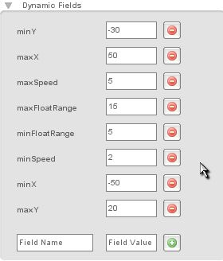
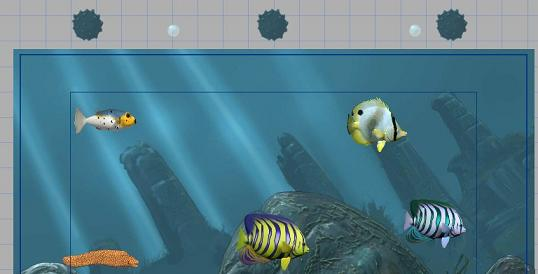

Torque 2D - Fish Game Tutorial - Part 7
7. Adding Mines
Now our fish game has bubbles we need to eat, and fish that try to eat it before us, as well as the need to eat the bubbles in time to survive. It's missing one thing though, exploding fish! That is why we need mines, to add a true peril as well as exploding fish. We already have an image that will work as our mine in our multi-frame fish image. So we will need to create a new class for this mine. Our mine will react a bit differently than any of our other objects. We don't want it to just sit there, since that doesn't make that great of an obstacle. We also don't want it to just drop like our bubbles do, that just doesn't seem to fit a mine quite so well (plus it makes it a bit too predictable). So, what we will do is drop the mine from the top of the screen, and calculate a random center position (we'll give it a proper range of our level's height). Then it will float up and down around that position. That should provide an interesting enough obstacle! On top of that if the player fish touches it, it will go off and decrease the player's life substantially. Thus we have exploding fish!
Our first step will be to browse out to MyFishGame/gameScripts and to add a "mine.cs" script file. Now that we have the script file, we need to be sure to exec it, so open up your game.cs script file and modify your startGame() function to look like this.
function startGame(%level)
{
exec("./player.cs");
exec("./fishfood.cs");
exec("./fish.cs");
exec("./mine.cs");
Canvas.setContent(mainScreenGui);
Canvas.setCursor(DefaultCursor);
new ActionMap(moveMap);
moveMap.push();
$enableDirectInput = true;
activateDirectInput();
enableJoystick();
sceneWindow2D.loadLevel(%level);
}
Code Sample 7.2.1
Now let's open our mine.cs and add our first function. Our onLevelLoaded() function.
function Mine::onLevelLoaded(%this, %scenegraph)
{
%this.startingY = %this.getPositionY();
%this.spawn();
}
Code Sample 7.2.2
All we do here is store the starting Y position, and call another function called spawn(). Since we plan to call spawn() whenever the player fish hits our mine, we want to separate it out into its own function. That way we can just call it now.
Now lets add our spawn() function.
function Mine::spawn(%this)
{
%this.state = "fallingDown";
%this.speed = getRandom(%this.minSpeed, %this.maxSpeed);
%this.originX = getRandom(%this.minX, %this.maxX);
%this.originY = getRandom(%this.minY, %this.maxY);
%this.setPosition(%this.originX, %this.startingY);
%this.moveTo(%this.originX, %this.originY, %this.speed, true, true);
}
Code Sample 7.2.3
In our first step, we set a field on our mine called "state" to "fallingDown." For our mine we are going to set up a very simple state machine, that way we can have it fall and then continually float up and down. Next we set a field on our mine called "speed" to a random value between a min and max speed. As you may have guessed we will be setting the minSpeed and maxSpeed values as dynamic fields on our mine object when we create it.
Next we set a "originX" and "originY" position, by getting random values from the min and max values for X and Y. This is going to be the position we want to fall down to, and then begin the float up and down. We need to store it like this, so we can use it as a point of reference for our floating up and down states. We then set our mine's position to our random X origin position, and then our "startingY" position. Our startingY position was set in our onLevelLoaded() function. This will reset the mine to the top of the screen every time we spawn our mine.
Our final line of script calls a very useful function that any T2D object can call, the moveTo() function. We first pass it the X and Y positions we want it to move to. We then pass it the speed at which we want it to move there. The next value is a true or false value defining whether we want it to auto stop when it reaches it's destination. The final "true" is telling it to perform a callback function when it reaches there. This is our next function, so add these lines after our previous function.
function Mine::onPositionTarget(%this)
{
%this.floatRange = getRandom(%this.minFloatRange, %this.maxFloatRange);
switch$(%this.state)
{
case "fallingDown":
%this.floatDown();
case "floatingDown":
%this.floatUp();
case "floatingUp":
%this.floatDown();
}
}
Code Sample 7.2.4
This function is called whenever we've reached a destination that we've defined in our moveTo() function. The first thing we do is get a random float range. This adds another dynamic aspect to our mines. Each time they float up and down, they'll change how far they will float. We then have a string switch statement for our state. As you can see we have three possible states. Our fallingDown state is for our initial drop, our floatingDown state is after we've gotten to our origin and we are simply floating downward, and our floatingUp state is when we float back up to repeat the floatingDown state and back again, etc. Each state calls an appropriate function. If this is called and our state is set to falling down then we need to fall down, if we're floating down then we need to float down, and finally if we're floating up we need to float up.
Now lets add our floatUp and floatDown functions, they are fairly similar so I will give you both of them together.
function Mine::floatUp(%this)
{
%this.state = "floatingUp";
%targetY = %this.originY - %this.floatRange;
%this.moveTo(%this.originX, %targetY, %this.speed, true, true);
}
function Mine::floatDown(%this)
{
%this.state = "floatingDown";
%targetY = %this.originY + %this.floatRange;
%this.moveTo(%this.originX, %targetY, %this.speed, true, true);
}
Code Sample 7.2.5
In each of our functions, the first thing we do is set our state to the mode we're entering. We then get a "targetY" position. In our floatUp function, our targetY is determined by taking our originY and subtracting our floatRange. In our floatDown function, it's determined by taking our originY and adding our floatRange. We then call the moveTo function with our newly generated targetY position and already set speed, telling it to auto stop and perform a callback.
Now we are done with our mine script for the moment. We won't worry about collision right now, we want to first make sure we can drop our mine and it will indeed behave the way we've scripted it to. Be sure to save your scripts, and we can move on to the Level Builder.
Our level should have our player fish, four other fish, our background images, and our little bubble just above the level. It's time to add another image, so look for your 14 frame fish image in your Static Sprites library and click the image until you get to frame 13 (as shown in Figure 7.3.1). Now drag and drop our mine image, just above the level. You can use the bubble's position as a reference. Resize it to about twice the bubbles size as well. We have our mine object! Next we need to apply the Mine class we created to the mine object. Click the "Edit" tab and expand the Scripting section. Then type in "Mine" under the class field (as shown in Figure 7.3.2). Now we need to add a few dynamic fields to it for our script to use. So ensure the mine is selected, and then click the Edit tab. Click the Dynamic Fields label to expand it, and add the following fields and values (as shown in Figure 7.3.2b).
|
|
 |
|
|
|
These values give us a good range of data for our mine to use to perform our scripted functionality. Now we can save and click the Play Level button to test our level. Once your game starts you should see your mine appear and float down at some random point. At a random Y position it will begin floating up and down.
Now that we have our mine behaving properly, we need to make it do more than just float and act as an interesting decoration. To make it do damage to our player, we must make it collide with our player. This is a pretty simple process, though, much similar to our bubble colliding with our player. We will start by opening up our mine.cs script file and adding this function to it.
function Mine::onCollision(%srcObj, %dstObj, %srcRef, %dstRef, %time, %normal,
%contactCount, %contacts)
{
if(%dstObj.class $= "PlayerFish")
{
%srcObj.spawn();
%dstObj.modifyLife(-%srcObj.damageValue);
}
}
Code Sample 7.4.1
This onCollision function for our mine, is very similar to our fish food. In fact the only difference is that we don't have a case for colliding with other fish, and instead of adding life we subtract the amount of life stored in our mine's damageValue field.
Now be sure to save your script file. Select your mine and click on the Edit tab. Click on the Collision label to expand your collision options. Check Send Collision, and uncheck both the Send Physics and Receive Physics options. Now check the Callback option, to be sure the script we just added will be called. Click the dropdown option for Detection Mode and set it to CIRCLE. When you do this, you should get a couple of more options. Be sure to uncheck the Superscribe Ellipse option (as shown in Figure 7.4.1).
Figure 7.4.1
Our final step is to add a dynamic field for "damageValue", so our script can pass the proper damage to our player fish. So click on your Dynamic Fields label to expand it and add the field "damageValue" and the value of "20" (as shown in Figure 7.4.2). Now you can save your level, and click the Play Level button to test it.
Figure 7.4.2
Once your level loads, you should see your fish sitting in the center, then the other fish swimming around. Your bubble should start falling at a random location and then slowly your mine should begin to fall. Move your fish into the mine and it should spawn again and you should take a large loss of life! Not quite the visual response we expect from exploding fish, but we do have our fish taking mine damage!
As you may have noticed, with your mine just sitting in the same spot floating up and down it isn't that much of an obstacle. Even if you have two or three of them like that it isn't, since you can just get used to the pattern and dodge the same spots. So to add a bit more of a challenge for the player we should add a time limit on the mine, so it will go off and respawn. Fortunately this is a very easy addition. Open up your mine.cs script file and add the following to the end of your spawn function.
if(isEventPending(%this.respawnSchedule))
cancel(%this.respawnSchedule);
%respawnTime = getRandom(%this.minRespawnTime, %this.maxRespawnTime);
%this.respawnSchedule = %this.schedule(%respawnTime, "spawn");
Code Sample 7.5.1
Make sure your mine is selected and click the Edit tab and select the Dynamic Fields label. Now add the dynamic fields "minRespawnTime" at a value "10000" (milliseconds), and "maxRespawnTime" at value "20000", which should produce a time between 10 and 20 seconds (as shown in Figure 7.5.1). Now our mine should randomly respawn between 10 and 20 seconds after it is spawned. There is one more final modification we should do before playing our level. Right now with just one mine and one food spawn the game is a bit too simple. Select your bubble, go to your Edit menu and select the Copy option. Then go to the Edit menu and hit the Paste option. Now drag the copy (it should be at the exact same position, so it will look, at first, like your moving the original copy) to the right side of the level. Do the same with the mines, but make two copies to have a total of three mines (as shown in Figure 7.5.2).
Figure 7.5.1

Figure 7.5.2
Now be sure to save your level, then press the Play Level button. We have a much more dynamic and fun game. You should have three mines falling at random locations, as well as randomly respawning. Then you should have two bubbles randomly falling for food.
We've added fish, food, more fish and mines to our game, along with tons of activity and peril. Hopefully we've also learned a lot about how to use the Level Builder and scripting to put together a fun and interesting game.